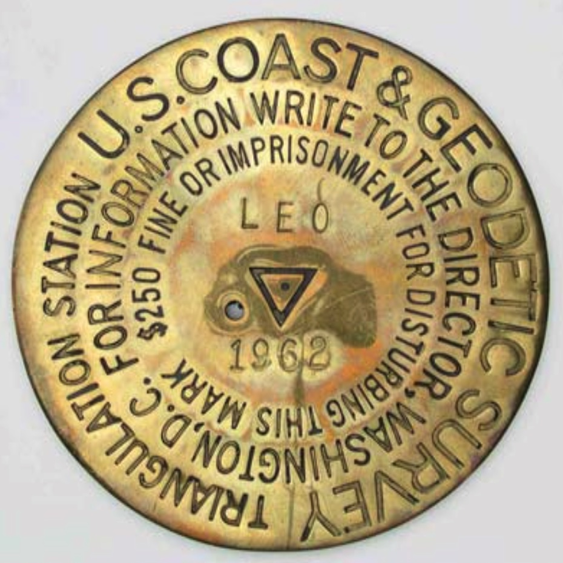

Show the code
knitr::include_graphics(here("images/trianglulation-station-leo-1962.jpg"))

Our mark had every advantage as a highly valued triangulation station disk, at the highest elevation in the county, set in concrete to last, near Hillsboro, the county seat, and set by the U.S. Coast and Geodetic Society (precursor to the NGS) – the pre-eminent surveying agency in the US government.
FY3210_MARKER: DS = TRIANGULATION STATION DISK
FY3210_SETTING: 7 = SET IN TOP OF CONCRETE MONUMENT
FY3210_STAMPING: HILLSBORO 1933
FY3210_MARK LOGO: CGSA Triangulation Station is a survey point established during a survey utilizing the triangulation surveying method. Triangulation consists of observing the angles at the vertices of adjacent triangles, measuring the lengths of some of their sides, and computing the lengths of the remaining sides. The goal of this procedure is to determine the horizontal positions (latitude and longitude) of the vertices of each triangle. The triangulation method thus produces horizontal positions for the survey mark but only approximate elevations. A given mark may have a more accurate elevation determined by a differential leveling.
knitr::include_graphics(here("images/trianglulation-station-leo-1962.jpg"))There may be six or more survey disks in the vicinity of each Triangulation Station. The main station, marked with a Triangulation Station disk, contains the factory stamping “TRIANGULATION STATION” with an equilateral triangle in the center. The triangle was usually about 2 cm on each side although occasionally from c1911 to c1925 (ex PID = BM0627, PN0027, TT0805, & OF1769), flat Triangulation Station disks were used which had a triangle of about 2.5 cm on a side, similar to the later Traverse Station disks. Beginning about 1905, an underground mark was set two to four or more feet underground and centered so as to be directly under the surface mark. The underground marks were set to preserve the position if the surface mark was damaged or destroyed. Both disks contained the same factory stamping and the exact same designation (name) and date. Triangulation Stations were normally named for an area feature or the property owner. Just prior to setting, the disk would be stamped by the original surveyor, as for example, “JONES 1936.” In the NGS database, the name would be “JONES” and the year set 1936. The disk was usually set so that the stamping could be read by an observer facing north. The disk would be set in a concrete monument, or set in a drill-hole in a large structure or bedrock. The concrete monument is normally about flush with the ground’s surface, 12 inches in diameter, and 48 inches or more deep, see Figure 15, with the bottom larger in diameter to help resist frost heave. Standard practice at a Triangulation Station was to also set two Reference Marks and an Azimuth Mark. For a period of time, in the 1970s, underground marks were also set at Azimuth Marks, hence the possible total of six disks. Some sites had additional reference marks added and some sites had marks set by other organizations, so having more than six disks in the area was quite possible.
REFERENCE MARKS - Reference Marks (RM) were set to assist in locating the Triangulation Station as well as to help determine if the Triangulation Station was undisturbed and in its original position. RMs could also be used to reset a station mark if required. Reference Marks were factory stamped with “REFERENCE MARK”and with an arrow pointing up, see Figure 40. The original surveyor stamped the RM with the name of the Triangulation Station plus the number of the RM and the date just prior to setting. For example, the first RM for station JONES would be stamped “JONES NO. 1 1936.” When setting, the surveyor rotated the disk until it pointed directly toward the Triangulation Station disk. The surveyor then measured the direction and distance from the Triangulation Station to the Reference Marks (RMs) and recorded the information as part of the station’s description. Later, if a surveyor attempting to find a Triangulation Station stumbled upon a RM first, the arrow and the published distance and direction between the RM and station would be valuable aids in the station recovery. To check the position of the Triangulation Station, the new surveyor could measure the angles and distances to the Reference Marks and compare them to the original values. Beginning in the 1920s, two Reference Marks per Triangulation Station were specified. Reference Marks were usually set within 30 meters (one tape length) of the station. They were numbered clockwise from north and set about 90 degrees apart. If a RM was destroyed, a new Reference Mark would be set using the next consecutive number. The disk would be set in a concrete monument, or set in a drill-hole in a large structure or bedrock.1
Triangulation stations are only one of many kinds of marks…
data_for_plot <- nc_marks_counties |>
st_drop_geometry() |>
filter(!is.na(last_recv),
!is.na(first_recv)) |>
mutate(first_recv = as.numeric(str_extract(first_recv, "^[0-9]{4}")),
last_recv = as.numeric(str_extract(last_recv, "^[0-9]{4}"))
) |>
mutate(decade_first_recv = floor(first_recv / 10) * 10,
decade_last_recv = floor(last_recv / 10) * 10) |>
mutate(decade_last_recv = floor(last_recv / 10) * 10) |>
replace_na(list(setting = "0 = UNSPECIFIED SETTING",
marker = "DO = NOT SPECIFIED OR SEE DESCRIPTION"))
data_for_plot |>
count(decade_last_recv, marker) |>
arrange(decade_last_recv) |>
mutate(decade_last_recv = as_factor(decade_last_recv),
marker = fct_reorder(marker, n, sum)
) |>
ggplot(aes(n, marker, fill = decade_last_recv, group = marker)) +
geom_col(show.legend = TRUE,
alpha = 0.7) +
scale_x_continuous(expand = expansion(mult = c(0, 0.05))) +
scale_fill_viridis_d(end = 0.9) +
theme(legend.position = c(0.7, 0.4)) +
labs(
title = "Survey and bench mark types: last recovery",
subtitle = glue("Count of mark types by decade last recovered",
"\n{comma(n_marks_counties)} marks in {n_counties} NC counties"),
x = NULL,
y = NULL,
caption = my_caption
)Warning: A numeric `legend.position` argument in `theme()` was deprecated in ggplot2
3.5.0.
ℹ Please use the `legend.position.inside` argument of `theme()` instead.Like FY3210, most marks are placed in concrete (Figure 3.3).
The three most important characteristics of survey marks are stability, longevity, and the ability of future surveyors to find and use the mark. In other words, the mark shouldn’t move, wash away, rust away, and/or be destroyed by cultural development, and surveyors returning to the point need to be able to find it and positively identify it. The mark needs to remain very stable or the survey values will no longer be valid.2
data_for_plot <- nc_marks_counties |>
st_drop_geometry() |>
filter(!is.na(last_recv)) |>
mutate(first_recv = as.numeric(str_extract(first_recv, "^[0-9]{4}")),
last_recv = as.numeric(str_extract(last_recv, "^[0-9]{4}"))
) |>
mutate(decade = floor(last_recv / 10) * 10) |>
replace_na(list(setting = "0 = UNSPECIFIED SETTING",
marker = "DO = NOT SPECIFIED OR SEE DESCRIPTION"))
data_for_plot |>
count(decade, setting) |>
arrange(decade) |>
mutate(decade = as_factor(decade),
setting = fct_reorder(setting, n, sum)) |>
ggplot(aes(n, setting, fill = decade, group = setting)) +
geom_col(show.legend = TRUE,
alpha = 0.7) +
scale_x_continuous(expand = expansion(mult = c(0, 0.05))) +
scale_fill_viridis_d(end = 0.9) +
theme(legend.position = c(0.7, 0.4)) +
labs(
title = "Survey and bench mark setting",
subtitle = glue("Count of mark settings by decade last recovered",
"; {comma(n_marks_counties)} marks in {n_counties} NC counties"),
x = NULL,
y = NULL,
caption = my_caption
)Next comes a summary history section. Here I show only the entry for the initial placement: “MONUMENTED”.
FY3210 HISTORY - Date Condition Report By
FY3210 HISTORY - 1933 MONUMENTED CGSThe first entry was written by surveyor RDH. Did he lead the team that did the initial survey work and placed the mark?
The effort invested in describing the location of FY3210 and its reference marks suggests that finding marks placed years in the past can be challenging.
Most marks are on private property. At this time Occoneechee Mountain was privately owned.
FY3210 STATION DESCRIPTION
FY3210
FY3210'DESCRIBED BY COAST AND GEODETIC SURVEY 1933 (RDH)
FY3210'ABOUT 1-1/2 MILES SOUTHWEST OF HILLSBORO, ON HIGHEST PART AND
FY3210'WESTERN END OF THE OCCONEECHEE MOUNTAINS ON PROPERTY OF SCOTT
FY3210'GATES.Atlantic White Flash was a brand of gasoline sold by the Atlantic Refining Company, later ARCO.
FY3210' TO REACH FROM HILLSBORO, GO SOUTH ACROSS THE ENO RIVER
FY3210'ON ROUTE 70 TO ITS JUNCTION WITH ROUTE 14, AND THEN BEAR RIGHT
FY3210'0.65 MILE ON ROUTE 14 TO FORK WITH A SIGN ATLANTIC FLASH IN THE
FY3210'V OF THE FORKS. It was a rural, farming community, and there was a dirt road to the top of Occoneechee Mountain. A “dim road” is rarely used, may be partly overgrown with vegetation, and hard to see.
FY3210' TAKE RIGHTHAND GRAVEL FORK AND PROCEED 0.8 MILE
FY3210'TO DIRT ROAD JUST BEYOND LARGE OAK WITH A TRIANGULAR BLAZE ON
FY3210'THE LEFT. TURN RIGHT AND GO ABOUT 100 YARDS TO SHARP RIGHT
FY3210'TURN, AND FOLLOW THIS FIELD ROAD ABOUT 250 YARDS ALONG SOUTH
FY3210'EDGE OF TIMBER. GO THROUGH WIRE GATE AT THIS POINT, AND
FY3210'FOLLOW ROAD THROUGH PASTURE ABOUT 170 YARDS TO LEFT TURN
FY3210'AND DRAWBAR GATE. PASS THROUGH GATE AND PROCEED 200 YARDS
FY3210'TO LEFT TURN AT CROSSROADS AT A SMALL DOUBLE TREE WITH
FY3210'TRIANGULAR BLAZE. AFTER TURNING LEFT, GO ABOUT 150
FY3210'YARDS TO DIM ROAD ON LEFT, AND FOLLOW ROAD ALONG RIDGE ABOUT
FY3210'600 YARDS TO STATION SITE. The summit of Occoneechee mountain was wooded. It must have been challenging to see through the trees to do the triangulation.
FY3210' STATION IS 13 METERS (43 FEET)
FY3210'SOUTHEAST OF 16-INCH POST OAK, AND 9.5 METERS (31 FEET) EAST
FY3210'OF TWIN CHESTNUT OAK 2 FEET IN DIAMETER AT ITS FORK. THERE
FY3210'IS A 6-INCH HICKORY BETWEEN STATION AND POST-OAK TREE.Three reference marks were set at the same time as FY3210–two within 100 ft and an azimuth mark a third of a mile away. There were exposed rocks at the summit in addition to trees: reference marks no. 1 and no. 2 were set in rocks two or more feet above ground.
FY3210'SURFACE AND UNDERGROUND MARKS ARE STANDARD DISK STATION
FY3210'MARKS IN CONCRETE, NOTES 1A AND 7A. REFERENCE MARKS
FY3210'NOS. 1 AND 2 ARE STANDARD REFERENCE DISKS IN STONE OUTCROPS,
FY3210'NOTE 12A.
FY3210'REFERENCE MARK NO 1 IS IN TOP OF A 5 BY 9-FOOT STONE WHICH
FY3210'PROJECTS 3.9 FEET ABOVE GROUND, IN A LINE WITH AN ALUMINUM
FY3210'WATER TANK AT FOOT OF HILL IN TOWN OF HILLSBORO AND
FY3210'STATION, AND 22.16 METERS (72.7 FEET) FROM STATION
FY3210'N 41 DEG 52 MIN E.
FY3210'REFERENCE MARK NO 2 IS IN A DEPRESSION ABOUT 5 FEET BELOW
FY3210'STATION, IN TOP OF 3 BY 4-FOOT GRANITE ROCK PROJECTING 2 FEET
FY3210'OUT OF GROUND, 11 METERS (36 FEET) SOUTH OF THE CENTER LINE OF
FY3210'ROAD TO STATION, AND 24.99 METERS (82.0 FEET) FROM STATION
FY3210'S 65 DEG 16 MIN E.
FY3210'REFERENCE MARK NO 3 IS STANDARD REFERENCE DISK
FY3210'IN CONCRETE, NOTE 11A, LOCATED ACROSS ROAD FROM
FY3210'CLEARED FIELD ON NORTH SIDE OF ROAD, 11 PACES SOUTH OF CENTER
FY3210'LINE OF GRADED ROAD, ABOUT 6 FEET SOUTH OF DRAINAGE DITCH,
FY3210'137 PACES WEST-SOUTHWEST OF ROAD LEADING FROM GRADED ROAD TO
FY3210'STATION, AND APPROXIMATELY 0.3 MILE FROM STATION
FY3210'S 32 DEG 56 MIN E.
FY3210'THIS MARK IS NOT VISIBLE FROM GROUND WITHOUT CLEARING.A standpipe was a water tower, which must have been nearby.
FY3210'BEARING FROM THE STATION TO
FY3210'LEFT EDGE OF WHITE STANDPIPE IN HILLSBORO IS N 41 DEG 57 MIN E
FY3210'AND TO RIGHT EDGE OF SAME STANDPIPE IS N 42 DEG 10 MIN E.From the location of FY3210, the standpipe’s width was 13 minutes or \(\frac{13}{60}^{th}\) of a degree, which would make it about 20 ft wide if one mile away, or 30 ft wide if 1.5 miles away.3 Is this the same as the “ALUMINUM WATER TANK AT FOOT OF HILL IN TOWN OF HILLSBORO” mentioned earlier? I assume so.
TODO: Find more (location, history, picture)
https://openorangenc.org/buildings/hillsborough-water-treatment-plant would be promising; it’s near Occoneechee Mountain. But it wasn’t completed until 1936, and it’s not quite the right bearing.
Maybe there’s something in here: https://www.orangecountync.gov/1246/Local-History-Collection
Marks are occasionally “recovered”. For FY3210 the first recovery was 21 years after placement.
FY3210 STATION RECOVERY (1954)
FY3210
FY3210'RECOVERY NOTE BY COAST AND GEODETIC SURVEY 1954 (ELJ)
FY3210'STATION AND ALL MARKS WERE RECOVERED IN GOOD CONDITION. THE
FY3210'DIRECTIONS TO ALL MARKS WERE CHECKED AND FOUND CORRECT. THE
FY3210'DISTANCES TO R.M. NO. 2 AND R.M. NO. 3 WERE CHECKED AND FOUND
FY3210'CORRECT.Good news! All marks were recovered in good condition. This is not always the case (@???).
A lot can happen in 21 years. The land is now leased by the Forest Station, and they built a lookout tower with one leg only 11 ft from FY3210.
FY3210' THE
FY3210'ORIGINAL DESCRIPTION IS CORRECT EXCEPT FOR A NEW TO REACH AND
FY3210'MEASUREMENTS TO THE LOOKOUT TOWER WHICH HAS BEEN BUILT NEAR THE
FY3210'STATION. A NEW DESCRIPTION FOLLOWS--
FY3210'
FY3210'STATION IS LOCATED ABOUT 1-1/2 MILES SOUTHWEST OF HILLSBORO
FY3210'ON WEST END OF A HIGH HILL AND IS ON PROPERTY LEASED BY THE
FY3210'STATE FOREST SERVICE. IT IS 31 FEET EAST OF A TWIN 24 INCH OAK
FY3210'TREE, 18 FEET SOUTHWEST OF THE NORTHWEST LEG AND 11 FEET
FY3210'NORTHWEST OF THE SOUTHWEST LEG OF THE HILLSBORO LOOKOUT
FY3210'TOWER. THE MARK PROJECTS ABOUT 2 INCHES AND THE DISK IS
FY3210'STAMPED---HILLSBORO 1933--- (NOTES 1A, 7A).
FY3210'
FY3210'REFERENCE MARK NO. 1 IS 72.64 FEET NORTHEAST OF THE STATION,
FY3210'45 FEET NORTH OF THE NORTHEAST LEG OF THE LOOKOUT TOWER. THE
FY3210'DISK IS SET FLUSH IN A DRILL HOLE IN THE TOP OF A 5 X 9 FOOT
FY3210'GRANITE BOULDER WHICH PROJECTS ABOUT 4 FEET AND IS
FY3210'STAMPED---HILLSBORO NO 1 1933--- (NOTE 12 A).There is now a power line pole 10 ft from reference mark no. 2.
FY3210'REFERENCE MARK NO. 2 IS ABOUT 5 FEET LOWER IN ELEVATION THAN
FY3210'THE STATION, 82.00 FEET SOUTHEAST OF THE STATION, 54 FEET
FY3210'SOUTHEAST OF THE SOUTHEAST LEG OF THE LOOKOUT TOWER AND 10 FEET
FY3210'NORTHWEST OF A POWER LINE POLE WITH METER ATTACHED. THE DISK
FY3210'IS FLUSH IN A DRILL HOLE IN THE TOP OF A 3 X 4 FOOT GRANITE
FY3210'BOULDER WHICH PROJECTS ABOUT 2 FEET AND IS STAMPED---HILLSBORO
FY3210'NO 2 1933--- (NOTE 12A).There is now a white witness post a foot from reference mark 3.
FY3210'REFERENCE MARK NO. 3 IS APPROX. 0.3 MILE SOUTHEAST OF THE
FY3210'STATION, 33 FEET SOUTHEAST OF THE CENTER OF THE ROAD TO THE
FY3210'STATION AND 1 FOOT NORTHWEST OF A WHITE WITNESS POST. THE MARK
FY3210'PROJECTS ABOUT 8 INCHES AND THE DISK IS STAMPED---HILLSBORO NO 3
FY3210'1933--- (NOTE 11A).Some dirt roads have been upgraded to gravel or pavement.
FY3210'TO REACH THE STATION FROM THE ORANGE COUNTY COURTHOUSE IN
FY3210'HILLSBORO, GO EAST ON STATE HIGHWAY 86 AND U.S. HIGHWAY 70A FOR
FY3210'0.4 MILE TO JUNCTION WHERE HIGHWAY 86 TURNS RIGHT, TURN RIGHT
FY3210'AND GO SOUTH ON HIGHWAY 86 FOR 0.65 MILE TO A FORK, TURN RIGHT
FY3210'AND GO WEST ON PAVED ROAD FOR 1.05 MILE TO REVERSE FORK, TURN
FY3210'RIGHT AND GO NORTH ON GRAVEL ROAD FOR 0.15 MILE TO LOCKED GATE,
FY3210'PASS THROUGH GATE AND CONTINUE NORTH AND EAST ON GRAVEL ROAD
FY3210'FOR 0.25 MILE TO THE AZIMUTH MARK (R.M. NO. 3) ON THE RIGHT,
FY3210'CONTINUE EAST ON ROAD FOR 0.05 MILE TO A GATE, PASS
FY3210'THROUGH GATE, TURN LEFT AND GO NORTH ALONG FENCE FOR 0.1
FY3210'MILE TO WOODS ROAD, CONTINUE UP HILL ON WOODS ROAD FOR 0.7
FY3210'MILE TO TOP OF HILL AND STATION AS DESCRIBED.
FY3210'
FY3210'HEIGHT OF LIGHT ABOVE STATION MARK 27 METERS.The light on the tower is about 90ft high.
Good news in general, however only seven years later “heavy growth” reduced the utility of reference mark no. 3. Surveyor WCF was a man of few words.
FY3210 STATION RECOVERY (1961)
FY3210
FY3210'RECOVERY NOTE BY NORTH CAROLINA GEODETIC SURVEY 1961 (WCF)
FY3210'HILLSBORO GOOD
FY3210'
FY3210'RM 1 GOOD
FY3210'
FY3210'RM 2 GOOD
FY3210'
FY3210'RM 3 GOOD
FY3210'
FY3210'HEAVY GROWTH MADE IT IMPRACTICAL TO USE RM 3 FOR AZIMUTH AT GROUND
FY3210'LEVEL FROM STATION MARK, NCGS STATIONS COULD BE USED AS AZIMUTH
FY3210'FOR CONVENIENCE.By the end of the sixties there were new roads, a microwave mast on the tower, a locked gate, and a key to collect from city hall. Mark no. 3 was lost. Perhaps the road it was near was widened or the verge was graded.
FY3210 STATION RECOVERY (1969)
FY3210
FY3210'RECOVERY NOTE BY COAST AND GEODETIC SURVEY 1969 (JBJ)
FY3210'THIS STATION WAS USED FOR CHECK ANGLE PURPOSE ONLY
FY3210'
FY3210'THE STATION MARK, REFERENCE MARKS 1 AND 2 WERE RECOVERED IN
FY3210'GOOD CONDITION. THE AZIMUTH MARK WAS SEARCHED FOR AND NOT
FY3210'FOUND. DUE TO ROAD CHANGES FOLLOWING IS A NEW TO REACH THE
FY3210'STATION.
FY3210'
FY3210'TO REACH THE STATION FROM THE POST OFFICE IN HILLSBOROUGH, GO
FY3210'SOUTH ON U.S. HIGHWAY 70 AND STATE HIGHWAY 86 FOR 0.2 MILE TO
FY3210'WHERE THE HIGHWAYS TURNS RIGHT AND A PAVED ROAD CONTINUES
FY3210'SOUTH. CONTINUE SOUTH ON PAVED ROAD FOR 0.3 MILE TO A SIDE
FY3210'ROAD RIGHT. TURN RIGHT AND GO WEST AND SOUTH FOR 0.4 MILE TO
FY3210'A FORK. TAKE THE RIGHT FORK AND CONTINUE SOUTHERLY FOR 0.4
FY3210'MILE TO A GRAVELED SIDE ROAD RIGHT, COUNTY ROAD 1183. TURN
FY3210'RIGHT AND GO WEST THEN NORTH, AROUND TWO PONDS FOR 0.45 MILE
FY3210'TO A LOCKED GATE. PASS THROUGH GATE AND GO NORTHWESTERLY,
FY3210'UPHILL FOR 0.55 MILE TO A LOOKOUT TOWER, A MICRO-WAVE MAST
FY3210'AND THE STATION. NOTE--A KEY FOR THE LOCKED GATE CAN BE
FY3210'OBTAINED AT THE CITY HALL IN HILLSBOROUGH.Did the earlier surveyor report an inaccurate height of the light? Or was there a new light in a new place? Surveyor JBJ doesn’t speculate; he simply supplies the facts as he determines them.
FY3210'HEIGHT OF LIGHT ABOVE STATION MARK 60 FEET.
FY3210'
FY3210'AIRLINE DISTANCE AND DIRECTION FROM NEAREST TOWN
FY3210'1-1/2 MILES SOUTHWEST OF HILLSBOROUGH.Fast-forward 16 years, and we find obliteration. New radio equipment needed a shelter, and a metal shed now covers where the triangulation station mark is (or was). Reference mark no. 1 is still doing its job, though it suffered some damage. Reference mark no. 2 is simply gone from its bore hole in the boulder, and mark no. 3 is confirmed truly gone.
FY3210 STATION RECOVERY (1985)
FY3210
FY3210'RECOVERY NOTE BY US POWER SQUADRON 1985 (WKB)
FY3210'STATION MARK - APPARENTLY DESTROYED. MEASUREMENTS FROM TOWER LEGS
FY3210'PLACE STATION BENEATH METAL BLDG. CONSTRUCTED TO HOUSE RADIO
FY3210'EQUIPMENT.
FY3210'
FY3210'HILLSBORO NO. 1 1933 - HILLSBORO RM NO. 1 - GOOD - SLIGHTLY DEFACED.
FY3210'
FY3210'HILLSBORO RM 2 FOUND DESTROYED - PILOT HOLE REMAINS IN BOULDER - MARKS
FY3210'MISSING.
FY3210'
FY3210'HILLSBORO RM 3 - AZIMUTH - SEARCHED FOR BUT NOT LOCATED.The next attempt to recover it 19 years is a bleak epilogue: now even the partially defaced reference mark appears to be missing. I hear sadness in the words “No marker could be found”.
FY3210 STATION RECOVERY (2004)
FY3210
FY3210'RECOVERY NOTE BY US POWER SQUADRON 2004
FY3210'SEARCH WAS MADE IN THE AREA OF PLOTTED POSITION. NO MARKER COULD BE
FY3210'FOUND.But the survey mission endures. Nearby mark FY3209 has been located under the lookout tower since 1954.
FY3209 DESIGNATION - HILLSBORO LOOKOUT TOWER
FY3209 PID - FY3209
FY3209 STATE/COUNTY- NC/ORANGE
FY3209 COUNTRY - US
FY3209 USGS QUAD - HILLSBOROUGH (2019)
FY3209
FY3209 *CURRENT SURVEY CONTROL
FY3209 ______________________________________________________________________
FY3209* NAD 83(2001) POSITION- 36 03 42.61513(N) 079 07 18.31560(W) ADJUSTED
FY3209* NAVD 88 ORTHO HEIGHT - 262. (meters) 860. (feet) SCALED
FY3209 ______________________________________________________________________
FY3209 GEOID HEIGHT - -30.483 (meters) GEOID18
FY3209 LAPLACE CORR - -3.41 (seconds) DEFLEC18
FY3209 HORZ ORDER - SECOND
....
FY3209_MARKER: 57 = LOOKOUT TOWER
FY3209_MARK LOGO: NONE
....
FY3209 STATION DESCRIPTION
FY3209
FY3209'DESCRIBED BY COAST AND GEODETIC SURVEY 1954 (ELJ)
FY3209'STATION IS THE CENTER OF THE BASE OF THE LOOKOUT TOWER OWNED
FY3209'BY THE STATE FOREST SERVICE, LOCATED ON A HIGH HILL ABOUT 1-1/2
FY3209'MILES SOUTHWEST OF HILLSBORO. IT IS 4 LEGGED GALVANIZED STEEL
FY3209'STRUCTURE WITH AN ENCLOSED OBSERVATION ROOM ATOP AND IS ABOUT
FY3209'90 FEET HIGH. A TRAVERSE CONNECTION WAS MADE FROM TRIANGULATION
FY3209'STATION HILLSBORO 1933 AND THE DISTANCE IS 20.6 FEET (6.28
FY3209'METERS).And its survival has been repeatedly confirmed:
FY3209 STATION RECOVERY (1983)
FY3209
FY3209'RECOVERY NOTE BY US POWER SQUADRON 1983 (WKB)
FY3209'TRAVERSE STA- CENTER OF BASE OF TOWER SITE VISITED, RECOVERED AS
FY3209'DESCRIBED.
FY3209
FY3209 STATION RECOVERY (1988)
FY3209
FY3209'RECOVERY NOTE BY US POWER SQUADRON 1988 (MCB)
FY3209'RECOVERED IN GOOD CONDITION.
FY3209
FY3209 STATION RECOVERY (2006)
FY3209
FY3209'RECOVERY NOTE BY GEOCACHING 2006 (PFF)
FY3209'VISITED SITE AND VERIFIED EXISTENCE. TO REACH FROM THE ORANGE COUNTY
FY3209'COURTHOUSE, PROCEED SOUTH ON CHURTON STREET (OLD NC86). BEAR RIGHT
FY3209'ONTO ORANGE GROVE ROAD (SR1006). TURN RIGHT INTO THE STATE PARK AND
FY3209'CONTINUE APPROX 0.5 MILE TO TOP OF MOUNTAIN. (VEHICLES ALLOWED WITH
FY3209'PARK RANGER PERMISSION.)The land is now owned by the state4 (referred to as a “state park” although its actual designation is a NC State Natural Area).
As of 2006 the mark was still there. Putting a mark directly under the tower seems like a smart decision!
Leigh, pages 17-18↩︎
Leigh, page 2↩︎
My calculation: \(r\sin\theta = width\), \(1 mi * 5280 \frac{ft}{mi} * sin(13 min * \frac{1 degree}{60 min} * \frac{pi\ radian}{180 degree}) ≈ 20 ft\). ↩︎
Purchased in 1997 https://en.wikipedia.org/wiki/Occoneechee_Mountain_State_Natural_Area ↩︎